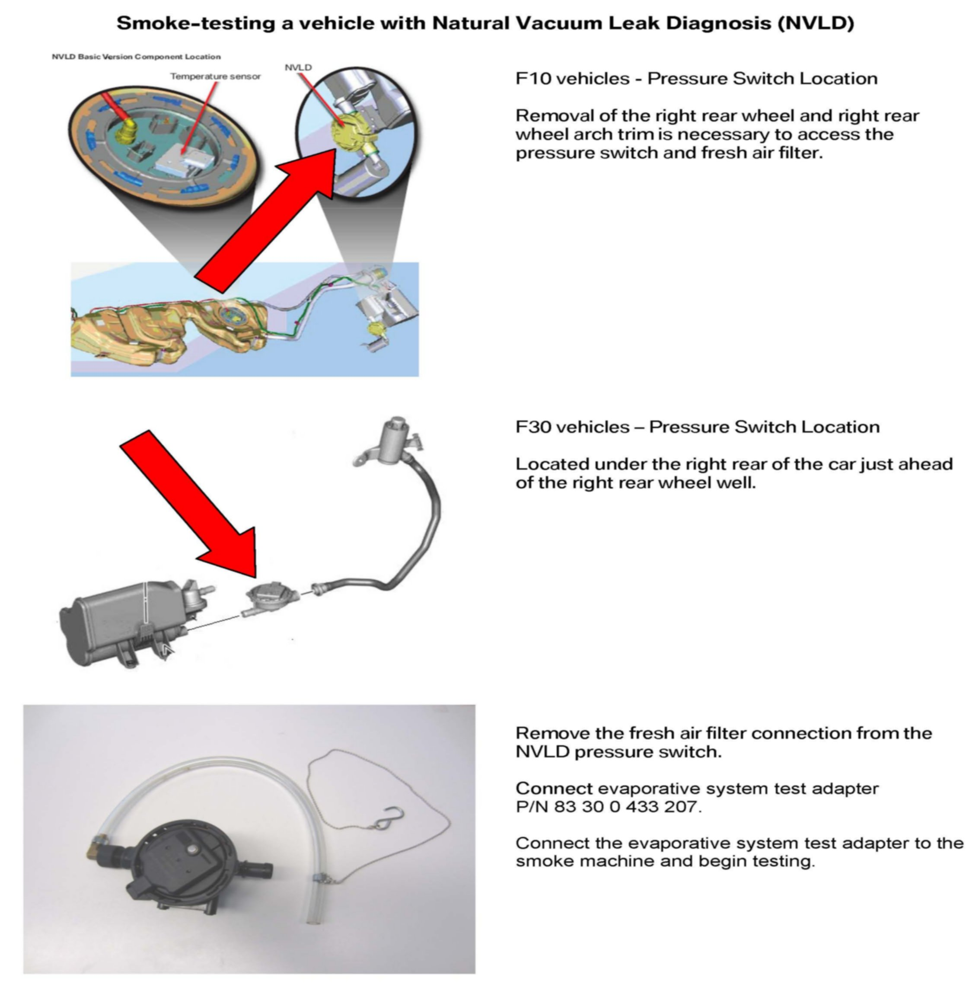

Fuel System - Evaporative System Vacuum Leak Diagnosis
SI B16 03 12Fuel Supply Systems
October 2012
Technical Service
This Service Information bulletin supersedes SI B16 03 12 dated February 2012.
[NEW] designates changes to this revision
SUBJECT
Natural Vacuum Leak Diagnosis (NVLD)
MODEL
[NEW] All models with NVLD
INFORMATION
TEST MODULE OPERATING HINTS FOR VEHICLES EQUIPPED WITH THE NVLD SYSTEM
Evaporative system leakage is found using the NVLD tank leakage test plan:
[NEW] If a fault is identified when using the NVLD leakage test plan, the following points should be verified.
1. Check that the fuel cap is properly closed.
2. Testing the evaporative system requires all venting pipes and electrical connectors to be properly connected.
3. [NEW] Search for leakage using the VACUTEC(R) Smoke Machine 625-522B-BMW: always pressurize the system without smoke, and monitor the flow meter and decay pressure gauge for system leakage. If leakage is present, briefly smoke the system to determine the location of the leakage. Refer to the attachment when connecting the VACUTEC Smoke Machine 625-522B-BMW to the evaporative system.
Evaporative system leakage is NOT found using the NVLD tank leakage test plan:
Only perform the applicable test plans for the faults stored. Do not replace any parts unless a leakage is found using the smoke machine.
TROUBLESHOOTING HINTS WHEN USING THE VACUTEC SMOKE MACHINE
Testing evaporative systems for leaks is very challenging. We have developed some diagnostic hints and special tools to properly connect a smoke machine to the NVLD fresh air vent/filter connection.
Attached is a detailed procedure for connecting the smoke machine to a vehicle using Natural Vacuum Leak diagnosis (NVLD).
Recently the VACUTEC(R) Smoke Machine 625-522B-BMW was added to the BMW Equipment Program. The VACUTEC(R) Smoke Machine 625-522B-BMW is the only approved testing device for the fuel and evaporative systems. This device automatically converts air to high purity nitrogen, using Pressure Swing Absorption (PSA) nitrogen technology. Orders for the VACUTEC(R) Smoke Machine, 625-522B-BMW, can be placed by calling the BMW Equipment program at 1-888-222-7997.
Included with the new VACUTEC(R) smoke machine are various caps and adaptors to help connect the applicator hose to the vehicle. It is always suggested not to disturb the system before testing; try to create as little disturbance as possible to the system when connecting the smoke machine. This smoke machine utilizes an UltraTraceUV(R) smoke solution. The smoke solution incorporates an ultraviolet dye, which helps pinpoint the leak with an ultraviolet residue surrounding the leak area. Determining the source of the leak is made easy when the included Hi-Density True UV LED light and incandescent white light are used.
When testing the vehicles evaporative system using the flow meter on the VACUTEC smoke machine, the ball indicator should not lift from the zero measurement on the scale when the system is leak-free. All BMWs are designed to be 100% leak-free. A flow meter indicating zero flow would be the same as placing your finger over or kinking the application hose of the VACUTEC smoke machine (no flow = 100% leak-free).
For more information regarding evaporative system testing describing possible fire hazards using oxygen vs. nitrogen, please refer to the following SAE website: www.sae.org/technical/papers/2007-01-1235
WARRANTY INFORMATION
Not applicable.
ATTACHMENTS

B160312_NVLD_Test_Adaptor.